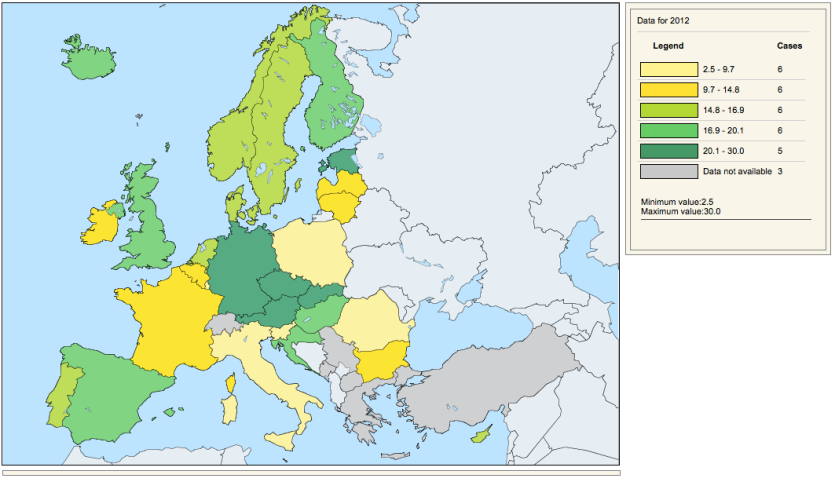
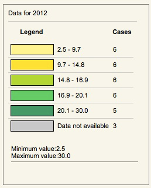
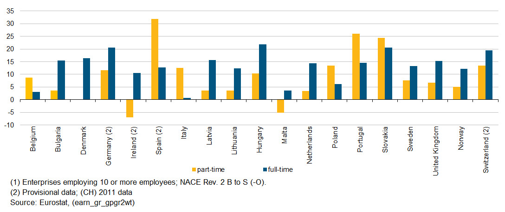
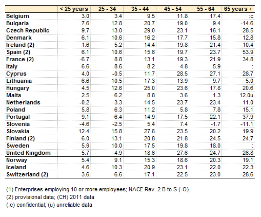

A recent Commission press release stated that ‘Women still work on average 59 days ‘for free’ every year compared to their male counterparts’. Considering such statements, what should be done to address the European Gender Pay Gap?
Chairperson: Anna Borrell Mauri - Spain
In Europe, the unadjusted gender pay gap stands at a level of about 16.4%, according to data for 2012 from the Statistical Office of the European Communities (Eurostat). The list of factors used to explain the gender pay gap is long and relationships between them complex.
Some encouraging recent trends include the increased number of women on the labour market and their progress in securing better education and training. However, gender gaps remain in many areas and in the labour market women are still overrepresented in lower paid sectors and under-represented in decision-making positions. Parenthood keeps female employment rates down, and women continue to work more unpaid hours than men at home.
Equality is a key factor in meeting the economic, social and demographic challenges the EU faces, and is essential in ensuring sustainable growth and the development of a fair society. Inequalities between women and men violate fundamental rights, and they also impose a heavy toll on the economy and result in underutilisation of talent.
The principle of equal pay for men and women for work of equal value is enshrined in the EU Treaties. The Treaty of Rome 1957 and the Equal Pay Directive of 1975 established the principle of equal pay for women and men for work of equal value. Despite these regulations, a gender pay gap remains and the goal of equal pay for equal work is still far from being achieved in Europe. However, the root causes of the gender pay gap extend well beyond the question of equal pay for equal work.
There is a gap between women's educational attainment and professional development, thus special attention should be paid to the transition between education and the labour market. The causes of the pay gap also derive from segregation in the labour market as women and men still tend to work in different sectors. On the one hand, women and men are often over-represented in certain sectors, with ‘female’ jobs (mostly in health care, education and public administration) being in general less valued than typically male professions. On the other hand, within the same sector or company the jobs done by women tend to be of lower value and less well paid.
When it comes to the statistics, several things need to be taken into account. Firstly, the unadjusted measure of the gender pay gap used in European statistics captures the overall gap in men and women’s hourly wages. Some of this gap can be explained by observable characteristics of male and female employees, which include differences in education, labour market experience, type of job and company characteristics. Adjustment for these observable characteristics reduces the gender pay gap but does not eliminate it and large differences remain. Furthermore many of these observable characteristics are also sources of disadvantage and indirect discrimination.
Secondly, an area where interpretation of the gender pay gap needs some care relates to methodological issues of making comparisons across countries. One of the challenges in addressing the extent of the gender pay gap in the EU has been the lack of suitable comparable data.
And finally, one of the problems of modern pay systems is that the growth of individualisation has disguised potential inequalities. Ensuring pay transparency requires businesses to take a detailed evaluation of their pay systems and compare the pay earned by men and women. It then requires employers to make sure they can justify any discrepancy in pay.
Economic and business benefits can be gained from enhancing gender equality. In order to achieve the objectives of Europe 2020, namely smart, sustainable and inclusive growth, the potential and the talent pool of women need to be used more extensively and more efficiently. This is why many efforts remain necessary to close the gender pay gap in both the private and public sectors, and concrete objectives are required, both at European level and at national levels.
 Gender Pay Gap in unadjusted form across Europe, %, 2012. Source: Eurostat
Links:
“Tackling the Gender Pay Gap in the European Union” brochure from the European Commission: http://ec.europa.eu/justice/gender-equality/files/gender_pay_gap/gpg_brochure_2013_final_en.pdf
“Strategy for equality between women and men 2010 - 2015”:
http://europa.eu/legislation_summaries/employment_and_social_policy/equality_between_men_and_women/em0037_en.htm
http://ec.europa.eu/justice/gender-equality/files/strategy_equality_women_men_en.pdf
Report on Progress on equality between women and men in 2013: http://ec.europa.eu/justice/gender-equality/files/documents/141404_annual__report_en.pdf
European Institute for Gender Equality (EIGE) videos: https://www.youtube.com/user/eurogender/videos
Gender : Identifies the social relations between men and women. It refers to the relationship between men and women, boys and girls, and how this is socially constructed. Gender roles are dynamic and change over time.
Gender equality : result of the absence of discrimination on the basis of a person's sex in opportunities and the allocation of resources or benefits or in access to services.
Unadjusted Gender Pay Gap (GPG) represents the difference between average gross hourly earnings of male paid employees and of female paid employees as a percentage of average gross hourly earnings of male paid employees. All employees working in firms with ten or more employees, without restrictions for age and hours worked, are included.
Gender Mainstreaming : Integration of the gender perspective into all policies with a view to promoting equality between women and men.
Glass ceiling : Invisible but real barrier through which the next stage or level of advancement can be seen, but can not be reached by a section of qualified and deserving employees. Such barriers exist due to implicit prejudice on the basis of age, ethnicity, political or religious affiliation and/or sex.
Social partners: is a term generally used in Europe to refer to representatives of management and labour (employers’ organisations and trade unions). The term ‘European social partners’ specifically refers to those organisations at EU level which are engaged in the European social dialogue, as provided for under Article 154 and 155 of the Treaty on the functioning of the European Union (TFEU).
Parental leave : is defined as an individual right to leave for men and women workers on the grounds of birth or adoption of a child to enable them to take care of that child, for at least three months, until a given age up to eight years, to be determined by Member States and/or social partners.
Additional Links:
Glossary on Gender Equality: http://ec.europa.eu/justice/gender-equality/glossary/index_en.htm
Are the already implemented equal pay legislation and equal opportunities policies, effective and adequate? If not, why have they not succeeded yet?
Have affordable, accessible and high-quality care for dependants and people with additional support needs, and women-sensitive leave arrangements been intrinsic components of the effort to close the pay gap?
What can the European Commission, the European Parliament, the Member States and European Social Partners do in order to eradicate the gender pay gap in Europe?
How can the European Institutions ensure that the right to equal pay for work of equal value is enshrined in the domestic legislation?
How can more innovative ways be implemented to ensure that women receive equal pay for work of equal value?
What mechanisms should be used to cope with the institutional heterogeneity against the gender pay gap across EU Member States?
In 2010, only five countries had an adjusted gender pay gap of less than 10%: Denmark (4%–6%), Sweden (5%), Germany (6%–14%), Ireland (8%) and Italy (10%–15%).
In 2012, across Member States the gender pay gap varied by 27.5 percentage points, ranging from 2.5% in Slovenia to 30% in Estonia.
In 2012, in the EU the gender pay gap for part-time workers varied by a factor of 39 percentage points, from the lowest recorded in Ireland (-6.9%) and Malta (-5.1%) to the highest in Spain (31.8%), Portugal (26.1%) and Slovakia (24.4%).
In general, the pay gaps are slightly narrowing: from 17.6% in 2007 to 16.4% in 2012, in Europe.
The unadjusted gender pay gap by working profile, %, 2012. Source: Eurostat
The unadjusted gender pay gap by age category, %, 2012. Source: Eurostat
Links:
Gender pay gap statistics:
http://epp.eurostat.ec.europa.eu/statistics_explained/index.php/Gender_pay_gap_statistics
In the context of the EU, the issue of the gender pay gap attracts additional interest, given that its various integration policies involve convergence not only across Member States but also within each MS. This is why strong EU leadership is required in coordinating policies and promoting good practice, combined with the active engagement of Social Partners and Non-Governmental Organisations.
The current economic conditions mean that more needs to be made of existing resources and mechanisms to address pay inequalities. This is why the challenge for those wishing to address the gender pay gap is to mobilise available resources, mechanisms and institutions to address the underlying processes that explain the persistence of the gender pay gap. A key role for the EU in the continued fight against the gender pay gap is to bring together the variety of initiatives and multiple actors. Across the EU there are already examples of good practice that could combine with a pressure at the European level as part of the Commission’s initiatives.
In addition, comprehensive approach to the gender pay gap is required, with actions at multiple levels. Such an approach recognises the complex web of factors acting to maintain the gender pay gap and also the variety of actors at different levels that are involved in pay determination, labour market regulation and shaping women’s and men’s experience of work.
But what remains as the crucial conflict is how to achieve the balance between the overall goal of gender equality with theexisting realities of the economy and work life. This means that if any efficient solutions are to be found, they also need to be applicable to businesses, and at the same time be ambitious enough to tackle the problematic gender pay gap. There may be viable solutions to the issues which are considered positive discrimination, or unrealistic for certain economies or industries to implement, no matter how effective they might be.
Links:
Resolution 1715 (2010) of the Council of Europe. “The wage gap between women and men”: http://assembly.coe.int/Main.asp?link=/Documents/AdoptedText/ta10/ERES1715.htm
Communication from the EC for “Strategy for equality between women and men”: http://ec.europa.eu/social/BlobServlet?docId=5776&langId=en
Closing the gender pay gap requires mobilisation of all key actors, mainly the EU countries, the European Parliament and the European social partners to tackle the multiple causes of the gender pay gap. However, finding a solution to the gender pay gap is mainly in the hands of national governments and the social partners. The EU can help, but solutions should be developed at national level. Public opinion in Member States has an important role to play.
Within the European Commission, the Directorate General for Justice (JUST) is responsible for implementing the Commission’s Strategy for Gender Equality 2010-2015. The Council of Europe Transversal Programme on Gender Equality launched in 2012 aims to increase the impact and visibility of gender equality standards, supporting their implementation in member States through a variety of measures, including gender mainstreaming and action in a number of priority areas.
In the Council, the Employment, Social Policy, Health and Consumer Affairs Council (EPSCO) works to increase employment levels and improve living and working conditions, so it is the Institution responsible for most of the gender equality decisions.Women’s Rights and Gender Equality (FEMM) is the equivalent body in the European Parliament. Together they created the European Institute for Gender Equality (EIGE), a EU agency which supports the EU and its Member States in their efforts to promote gender equality, to fight discrimination based on sex and to raise awareness about gender equality issues.
Generally, reducing the gender pay gap is an important topic on the European political agenda. Since 1999 it has been part of the European employment strategy. In 2001, the Treaty of Nice requested Member States to act for ‘equality between men and women with regard to labour market opportunities and treatment at work’.
The European Commission’s 2007 Communication on the gender pay gap proposed a series of actions to tackle the gender pay gap. These included the better application of existing legislation, fighting the gender pay gap in employment policies, promoting equal pay among employers and through social partnership, and supporting the exchange of good practices across the EU.
Closing the gender pay gap through legislative and non-legislative measures is a core objective of the European Commission’s ‘ Strategy for equality between women and men (2010-2015)’. The Strategy sets out actions in five areas: the economy and labour market, equal pay, equality in senior positions, tackling gender violence, and promoting equality beyond the EU.
In the Directive on Equal Pay for Work of Equal Value (Directive 2006/54/EC) the principle of equal pay for equal work or work of equal value is also incorporated. One of the Commission’s priorities for the coming years will be to monitor the correct application and enforcement of the equal pay provisions of the Directive 2006/54/EC and to support employees, Member States and other stakeholders by providing guidance on the proper enforcement and application of the existing rules.
Gender equality and making better use of women’s talents and skills are central to closing the gender pay gap and to achieving the objectives of the Europe 2020 Strategy, the EU’s growth strategy for the coming decade. The Strategy aims to create more and better jobs, to achieve a higher employment rate for women as part of the overall employment target of 75% for all 20-64 year-olds, and to ensure that there are 20 million fewer people in or at risk of poverty and social exclusion by 2020.
Links:
Basic legislation already in place (Directives, Communications, Recommendations, Reports and Council Conclusions): http://ec.europa.eu/justice/gender-equality/law/index_en.htm.